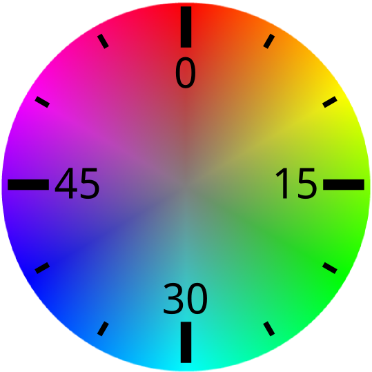
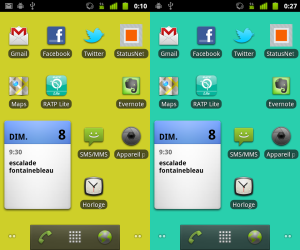
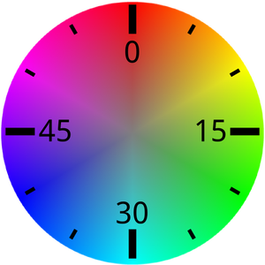

You just know the time

Are you always able to tell time after having checked your smartphone?
Very often, I’m not. Yet, time is displayed very big on the unlock screen and is always visible at the top.
When using my smartphone and when I don’t want to explicitly check the time, I don’t pay any attention to the clock. It can be similar to the “banner blindness” phenomenon.
What if the time could be printed into my mind without doing any effort?
I wanted to experiment around this idea. In a short time, I created a live wallpaper for Android which color changes over the hour.

I’m sure that after having checked the smartphone, we are able to tell what color was the background. And because a given color corresponds to a given number of minutes, we can approximately guess the time. The tint of the background color depends on the minutes : 0 min is red (0°), 30 min is turquoise (180°)… I think that the hour is not important, most of the time, we are able to guess the hour.
Of course, it requires a learning time. A time for our brain to learn the bijection between colors and minutes. This experiment will test if it is easily possible.

Give it a try by downloading “Color Clock Wallpaper” from the Android market.
And it’s open-source! You can grab the code on my github and come up with your own additions.
I will start using it every day, and see if this experimentation works. It may require to be tweaked, we will see.
I also have ideas for additional features:
- Add a texture to the wallpaper, for it to be pretty.
- I notice I like to tap on the screen when I have the “Nexus” wallpaper, because I know it will do something entertaining. What if this something could make me know the time?
- Let the user choose the color gradient ?